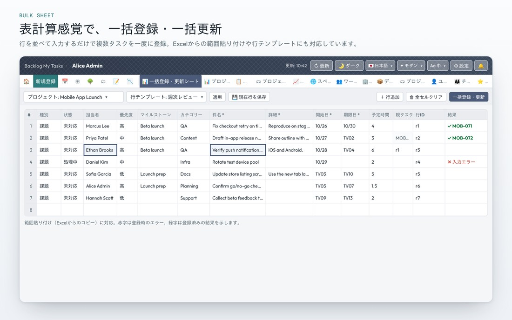

不僅能像Excel一樣貼上批次登記新任務，也支援以截止日搜尋既有任務並批次更新，以及Excel檔案下載・匯入。

從試算表複製範圍後貼到儲存格即可。也能以列ID批次設定父子關係，並以列範本、Excel匯入加速固定格式的登錄。「⚙ 休假・平日設定」中設定的休假，會從AI排程中排除。
將依期間・負責人搜尋到的既有任務讀入工作表，只把實際變更的項目彙整反映到Backlog
讀入後會檢查是否有其他人更新了同一筆任務。可選擇以「強制更新」或「取得最新」其中一種方式解決
類型・負責人・父任務等欄位在Excel中也能以真正的下拉選單選擇（暫定父任務ID會自動加到父任務選項的最上方）。編輯後只要拖放到丟放區即可匯入，最後確認後才會反映到Backlog
指示文（提示詞）由擴充功能產生。將 AI 的回答貼到對話框，就會以列的形式加入工作表。
依父任務名稱、開始日、期限日與工作內容，產生拆分為子任務與孫任務的指示文。日程會重新安排，從前置任務期限的隔天開始。將回答貼到對話框，就會以列的形式加入工作表。
將會議記錄（逐字稿）交給 AI，只會抽出負責人與期限已確定的待辦事項。選擇會議日期、類型、里程碑與分類後，開始日為會議日期，期限日為其後 7 天。
依問題（事件名稱）與問題說明，AI 以「為什麼 1 到為什麼 5」深入追查原因，建立真因與對策任務。可以回答 AI 的提問後重新送出，最多 5 次。對策任務會成為工作表的新列。